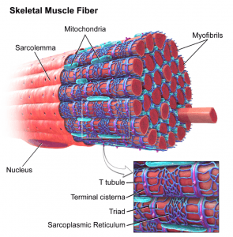
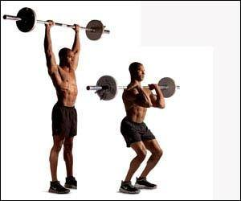
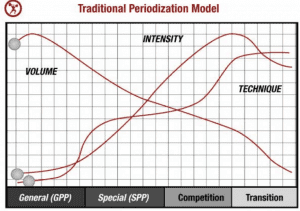

Against all logic and reason, I occasionally find myself feeling some twinge of patriotism towards my homeland of the United States of America—albeit, usually in the context of “Criticizing its institutions so she can relieve herself of the guilt and malaise that has been laid upon her”.
On a similar note, while I do have a great deal of respect for the culture of the Russian Federation and its environs, I am not quite as enamored with Eastern Europe as some nameless manospherians are, with a few exceptions in some select areas.
Like most on Return of Kings, I despise communism in all its forms, and with just cause. However, having the interests and professional career that I have, I’d be remiss if I didn’t point out that there were two things that the Soviet Union did very well—music and weightlifting.
The music is, of course, completely beyond the scope of this article (I’d recommend looking into the Alexandrov Ensemble myself), but weightlifting can be discussed in depth.
And so without further ado, here are four performance techniques of weightlifting that were developed either in the Soviet Union or in Former Soviet Union states, and can be immediately utilized in your lifting endeavors.
1. PNF Flexing
Also known as “proprioceptive neuromuscular function”, this is essentially where one flexes/squeezes as many muscles as possible in order to call even more muscle fibers into play. And the more muscle fibers that are involved in a lift will of course lead to a greater increase in strength. In fact, according to one of Russia’s greatest exports Pavel Tsatsouline, doing PNF can instantaneously make you capable of lifting another 5-10 pounds that you couldn’t before.
When you’re doing a lift, merely grip the bar as tight as you can, and clench the buttocks as hard as you can. This will cause irradiation (see below), force the other muscles of the arm and the lumbo-pelvic-hip-complex to maximally tense as well, giving you an overall increase in your muscular strength.

2. “Greasing the Groove”
In general, Olympic weightlifters seem to follow a pattern of high intensity/load, low reps, and moderate sets spaced throughout the day. Paradoxically, doing high repetitions can also provide some benefit to strength as well—not so much from increasing the strength of the muscles, but from training the central nervous system to be accustomed to the particular movement you are doing.
In other words, to develop strength, you can do a program of high repetitions and moderate weight, as this will train the central nervous system to become more “used to” the movement and thus easier for you.
However, a problem does arise from this—doing too many reps with a weight close to your maximum can lead to compensatory movements and thus injury (i.e., arching or twisting the back to achieve a lift, to cite just one example), and doing many reps with a light weight kind of defeats the purpose of strength training in the first place.

There is a way to both grease the groove to get the neural advantages of repeated sets AND develop strength as well, and it happens to be the next entry.
3. Drop Setting
Going back to Pavel Tsatsouline’s example, he does not refer to this technique by name, exactly, so much as he cheekily refers to it as something of a “Potemkin Village” of fitness. Namely, his Spetsnaz unit in Afghanistan had to occasionally impress military officers by putting on a show of Herculean musclemen that were ordered to specifically put on said show.
One of their tasks was to build their muscles to be as large—yet still functional—as possible, a goal that was achieved with drop setting.
To do this, begin with one set of your one rep maximum, with no more than 2-3 reps. Then drop 5 pounds and do another set of 2-3 reps. Then drop another 5 pounds. And another, and so on and so forth. You can literally do this exercise until you’re just lifting the bar. This technique trains both the one rep max and many repetitions, the only downside being that it does take a large amount of time to do
4. Cycling (not steroids!)
Also known as periodization, this is a technique in which you must do something that might seem a bit paradoxical. Once you have reached a plateau in training, lower the weight down to a light intensity, and start the cycle again.
Slowly, over a period of 8-10 weeks, you should get back to where you were before, and you just might find that you will set a new personal record.

Dos vidanya, and good luck with your training!
Read More: 3 Ways High-Rep Lifting Can Improve Your Routine